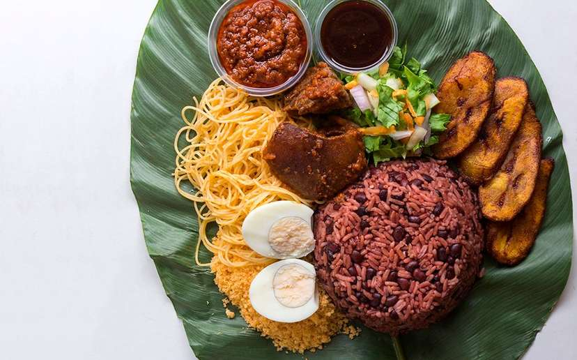

WAAKYE

Description
This is a recipe made undoubtedly better than no other country but Ghana
Ingredients
- Rice
- Black eye beans
- Waakye leaves
Steps
- Wash the beans and add into the pressure cooker.
- Wash the waakye leaves and also add into the pressure cookers. Pour in water up to the minimum level on the pot.
- Close the valve of the pressure cooker and leave until it reaches full pressure. This should take no more than 15 mins.
- Once it reaches full pressure, reduce the heat and leave for additional 10 mins for the beans to cook.
- Remove from heat and allow to cool down naturally to depressurize. This should take around 20 mins.
- Pour the beans with the cooking liquid and the waakye leaves into another pot. Wash the rice and pour into the pot too.
- Add more water if needed so there is enough to cook the rice. Add some salt and cover the pot.
- Allow the rice to cook. The time for this depends on the type of rice used. Check pack instructions if you are not sure.
- Remove the waakye leaves and serve with your favourite side.